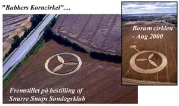
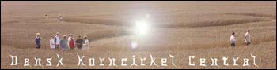
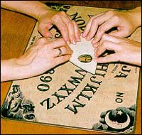

Harriet Moore es una corresponsal británica que usualmente contacta la JREF para asuntos de interés que generalmente tienen que ver con magufería. Aquí ella nos relata cómo un reporte específico de OVNI llamó su atención y nos provee con un ejemplo excelente de cómo podemos mirar estos asuntos y llegar a una explicación racional. ¡Gracias, Harriet!
Estoy subscrita a la lista de correo electrónico “Fortean” organizada por Daev Walsh de Dublín. Desde esta lista recibí el siguiente reporte sobre un avistamiento de OVNI en mi pueblo natal, Belfast. Recibí este correo en mayo del 2000 y ahora lo reproduje completo más abajo. Mis comentarios sobre el supuesto evento le siguen. Para contactar a Daev vayan a : http://www.blather.net
El reporte…
Las primeras historias en meses sobre OVNIS en Irlanda nos llegan de Luis González Manso en España quien nos envía un reportaje que encontró en “UFO Roundup” vol 5, Nr. 14, 6 de abril del 2000.
OVNI secuestra carro en Ulster: la víctima reporta seis horas de “tiempo desaparecido”
Un hombre de Ulster dice que su carro fue levantado del suelo por un OVNI y que experimentó seis horas de “tiempo desaparecido” como resultado del evento. El jueves 23 de marzo del 2000, John H., empleado de una factoría en Belfast Oeste en el Condado de Antrim en Irlanda del Norte, “iba camino a casa del trabajo luego de un turno largo y agotador que había durado 24 horas. Así que pueden imaginarse que estaba ansioso por llegar a casa con mi esposa y mis hijos y dormir por varias horas”. “Pero”, reportó John, “mientras manejaba a casa decidí pararme en la estación de gasolina y llenar el tanque y entonces noté a mi derecha una enorme luz en el cielo”.
“Primero pensé que quizá era la luna. Pero al mirar otra vez ví que no tenía la forma de la luna. En realidad, tenía la forma de un huevo. Estaba encantando con lo que veía. Primero pensé, ve busca a alguien para que vea esta cosa. Pero, mientras el pensamiento cruzaba mi mente, algo me dijo que me metiera en el carro y me alejara de la estación de gas”.
“Sin pagar por la gasolina me metí en el carro y me alejé manejando. La cosa me perseguía. Yo vivo en Falls Road al Oeste de Belfast pero estaba manejando en la carretera que va hacia el sur, hacia Dublín. ¡Yo no quería ir a Dublín! Quería ir a casa con mi esposa y mis bebés. No podía entender por qué estaba manejando en esa autopista.
“Mientras manejaba noté el objeto otra vez. Estaba comenzando a asustarme muchísimo. De hecho, estaba tan asustado que comencé a gritar. Sin saber por qué detuve el carro en una colina que lleva a un área de granjas al norte de la autopista donde me encontraba, la M-3. Parecía que el carro se estaba elevando. Lo sentí. Pero, por alguna razón, no estaba seguro de lo que era. Era como si alguien jugara con mi cerebro. Me decían lo que tenía que pensar. Todo lo que recuerdo después de ésto es que iba manejando en el camino de Whiterock/Donegal y de regreso a casa en Falls Road. Lo divertido de todo esto es que sólo me toma cinco minutos llegar a mi casa desde la estación de gasolina. Pero eran las 2:30 a.m. y aún no llegaba a casa. Han desaparecido por lo menos seis horas de mi vida, no puedo decir qué hice en ese tiempo. Quiero saber qué está pasando y quiero saberlo ahora”.
El caso está siendo investigado por Conor McLaughlin de la Sociedad de OVNIS de Belfast. (Muchas gracias al testigo y a Conor McLaughlin por este reporte).
El mensaje fue publicado (posted) en la lista de correos UFO Updates: http://www.ufomind.com/ufo/updates/2000/apr/m06-001.shtml
La investigación…
Me intrigó esta historia porque supuestamente ocurrió a cinco o diez millas del lugar donde vivo. Así que me puse a investigar tanto como pude sobre el evento. Nunca antes había investigado sobre OVNIs. Normalmente estoy envuelta en asuntos sobre medicina alternativa y ferias de salud. Sin embargo, esto me parecía iba a ser bastante interesante porque es un nuevo campo para mí. Mi investigación puede ser resumida en algunas llamadas telefónicas y una consulta con un mapa.
Comencé contactando los periódicos locales. Ninguna de las personas con las que hablé recordaba tal evento. Luego pensé en llamar a la oficina de Metereología, localizada en el Aeropuerto Internacional de Aldergrove y preguntarles las condiciones climáticas para la fecha del avistamiento. Según ellos, el jueves 23 de marzo se caracterizó por fuertes vientos que soplaban desde el sureste. También me informaron de una lluvia ligera y nubes densas y bajas que cubrían la noche.
Después llamé por teléfono a Armagh Planetarium. Hablé con un caballero bastante interesante allí conocido como JT. Me pidió que le enviara la historia y así lo hice. JT me informó que, si las condiciones lo permitían, tres planetas podían ser vistos en el cielo de esa noche desde las 8:30 p.m., Júpiter, sería el más brillante con Saturno y Marte algo más opacos. La luna salió a las 11:30 p.m. y por el sureste esa noche. JT está interesado en esas historias y guarda un archivo con informaciones similares. Descubrimos que tenemos un conocido en común, el señor Alan Sewell de la sociedad de OVNIs de Irlanda. JT pensó que Alan hubiera conocido esta historia y que se hubiera puesto en contacto con él. JT no conocía a ningún corresponsal de Belfast UFO llamado Conor McLaughlin.
El próximo paso fue buscar mapas locales y fijarnos en el diseño geográfico del área, sus calles y las locaciones mencionadas por “John H”, notando a la vez la hora y la orientación de la luna, el clima o cualquier otra posible fuente de luces brillantes. Mientras miraba el mapa hice las siguientes observaciones.
Belfast Oeste está localizado sobre colinas en su occidente y norte; por lo tanto la vista principal es hacia el sur y hacia el este. El Aeropuerto del Puerto de Belfast está a sólo unas millas de allí, hacia el este y, los aviones que se aproximan al puerto deben hacerlo desde el noreste volando sobre “Belfast Lough” o, desde el sur. Ambas direcciones son claramente visibles desde Belfast Oeste.
Hay varias estructuras visibles desde Belfast Oeste que tienen luces de advertencia; i.e. cuadras de apartamentos, plantas de energía y antenas transmisoras de radio y televisión.
Entonces pensé en la historia de John analizándola luego de conocer toda la información disponible.
John H es algo más que tímido sobre su nombre y, en realidad, detalles sobre la estación donde estos eventos supuestamente ocurrieron son bastante escasos. Todo esto me hace sentir un poco sospechosa. Más aún, el corresponsal del Belfast UFO, Conor McLaughlin es una bestia esquiva. Hay algunos en la guía telefónica y los llamé a todos. Él no era ninguno de ellos.
La confusión es evidente en el relato de la historia. Aunque John dice que se encontró manejando hacia Dublín, él nunca menciona el Westlink o la M1 - la arteria principal de la ruta sur desde Belfast. Él tambien asegura haberse detenido en una calle de una colina fuera de la M3. La M3 tiene como dos millas de largo y se encuentra ubicada enteramente dentro de los límites de la ciudad; no sólo eso, tampoco hay ninguna finca o granja, ningún animal o camino por esos lugares ni cercanos a la autopista, a menos que contemos las palomas (avicultura en vez de agricultura supongo).
Aunque el titular del artículo decía que John había sido secuestrado por un OVNI, la lectura de la historia me indicaba que él había tomado varias decisiones conscientes, la decisión inicial fue abandonar la estación sin pagar por la gasolina. John nunca dijo que el OVNI se aproximó a su vehículo. De acuerdo con su historia, la nave siempre está en el cielo o persiguiéndolo. Como ya he establecido, se trataba de una noche húmeda y nublada entre las horas de las 8:30 p.m. y las 2:30 a.m., imagino que habían en el lugar otros vehículos y personas que hubieran notado un alienígena en forma de huevo volando bajo. Es un pasatiempo nacional en Ulster - aquello de fijarse en lo que las otras personas dicen/piensan/hacen.
Como John estaba, por admisión propia, seis horas tarde para llegar a su casa, ¿lo reportó su esposa como perdido o desaparecido o él la llamó para decirle que llegaría tarde? Desafortunadamente, la historia no lo dice. Tampoco sabemos si John toma alguna medicina o si ingiere bebidas alcohólicas. Como John dice que acababa de terminar un turno de 24 horas tendría que haber estado exhausto cuando salió de la factoría. La gente cansada muchas veces tienden a alucinar y, un turno de 24 horas parece excesivo (¡a menos que seas un principiante de médico!). El turno de 24 horas nos lleva a la interesante cuestión sobre si John sabía con anticipación que iba a estar trabajando tantas horas. Si lo sabía, quizá debió haber tomado un taxi hasta su casa en vez de poner muchas vidas en peligro al irse manejando.
Como el Aeropuerto del Puerto de Belfast está a sólo unas millas de Belfast Oeste y bien cerca de la M3, las luces de las naves que se aproximan para aterrizar, vistas a través de una capa de nubes, pueden parecer bastante extrañas. El parcho de luz brillante en movimiento, ningún sonido y una ausencia de perspectiva visual contribuyeron en crear todo el efecto espeluznante.
En conclusión, creo que la historia es una mala representación de eventos reales. Me parece poco probable que John haya visto cuerpos celestiales como la luna, Marte o un OVNI debido a la noche nublada y la llovizna. Luego de considerar otras posibilidades, como luces de antenas transmisoras, creo que lo más probable es que John haya visto las luces de un avión aterrizando en el Aeropuerto del Puerto; particularmente cuando se parqueó; y, la sensación que reportó de que se elevaba fue causada, en mi opinión, por dos cosas - el viento moviendo el vehículo y el cansancio que lo hacía dormitar y despertarse.
Ha sido un ejercicio educacional y entretenido la investigación de este reclamo sobre el avistamiento de un OVNI y espero haber abordado el tema con una mente abierta. De todos modos, apreciaría otros comentarios y puedo ser contactada a través de mi e-mail harriett@theconnexion.co.uk.
¡Bien hecho, Harriett! Un poquito del trabajo básico de “Miss Marple” aquí, nada de correderas con instrumentos científicos y/o asistentes, y observamos como un escenario mucho más creíble se desarrolla. Pero, debo decir, que estoy seguro que “John H” aún cree su propia historia y siempre lo hará…
Mi amigo danés Mogens Winther nos envía un artículo sobre los “círculos de cultivo” (crop circles) esas obsesiones extrañas que parecen retornar cada año por todo el mundo. Los devotos juran que han sido OVNIs que han creado estos patrones en los campos de cultivo. Aunque aquí en Estado Unidos usamos el término “círculos de cultivo”, en Gran Bretaña los llaman “Círculos de Maíz”, porque allá “maíz” (corn) se refiere a cualquier grano de cultivo y no a lo que ellos llaman específicamente “maize”.
Mi primer Premio Húngaro fue otorgado en 1992 a unos estudiantes en ese país quienes crearon el primer círculo de cultivo en Hungría. Fue celebrado por todos los creyentes hasta que los mismos muchachos se encargaron de desmentirlo. Ahora Mogens tiene un grupo activo en Dinamarca. Pero lean mi resumen de su descripción.
Ustedes quizá hayan visto las imágenes tomadas por mi clase de astronomía recientemente (mostradas aquí). Ellos hicieron esto - durante sus vacaciones - trabajando en un frío extremo por casi tres noches. Ha sido un placer trabajar con un grupo de jovencitos y jovencitas tan brillantes como éstos. Cuando comenzamos este año escolar la gente de la TV2 Danesa nos pidió que hiciéramos un círculo de cultivo. En ese entonces estábamos haciendo un proyecto sobre “La vida en el Universo” - así que aceptamos.
Nuestra intención era copiar un “misterioso” círculo de cultivo danés que había aparecido en la ciudad de Borum en agosto del 2000. Según los “expertos”, este círculo es tan matemáticamente complicado que nunca pudo haber sido creado por humanos. Sin embargo, sólo le tomó a mis estudiantes unos minutos para encontrar una forma de construirlo.
La TV2 Danesa llegó después que terminara el horario del colegio y en 90 minutos ya lo habían finalizado, del mismo tamaño que el “misterioso”. A la derecha pueden ver el “círculo genuino” y a la izquierda está nuestro círculo.
Así que concluiré que mis estudiantes tienen inteligencia extraterrestre, pero que, aún así y hasta donde he podido constatar, ¡no tienen piel verde y son de tamaño normal entre los humanos!
Hicimos nuestro círculo (mi vecino, el granjero local nos dio su permiso) a unos metros de una autopista muy transitada. Miles estaban desacelerando el paso para ver a los estudiantes trabajar. Pero la gente olvida muy rápido y, dos semanas más tarde, unos “expertos” redescubrieron nuestro círculo y llamaron al periódico (quienes ya lo habían fotografiado desde un avión) y a las estaciones de radio.
Al final, la forma en que lo hicimos, luego que todos los granjeros habían cosechado sus fincas, fue mostrada en un programa para niños. Esto fue muy divertido, sin embargo, lo que más sorprendió a mis estudiantes fueron las pilas de cartas de casi seis metros que recibimos luego de gente por todo el país ¡expresando su rabia! Uno hasta preguntó que quién me había concedido el permiso, como profesor, para enseñar este tipo de lección en una clase de astronomía. Pero sí, ellos lo harían otra vez, y ellos han abierto, como un tipo de broma, su propia compañía de círculos de cultivo - Dansk Korncirkel Central, “ofreciendo a las compañías paisajes comerciales fuera de este Mundo”.
Por favor noten el misterioso OVNI de la imagen. Mis estudiantes se divirtieron mucho falseando esta imagen. Nadie vio el OVNI en realidad, pero recuerden ¡la visión humana sólo tiene un periodo limitado de longitud de onda!
El 22 de agosto del 2001, Radio DR-Syd, de repente interrumpió su programa de noticias y conectó directamente con su reportero de campo que estaba en un presunto lugar de aterrizajes de OVNIs cercano a Sonderborg. Antes de esta transmisión en vivo, algunos entusiastas de los círculos de cultivo habían llamado a la televisión, la radio y los periódicos. Luego nosotros revelamos durante la transmisión que este círculo de cultivo no tenía origen extraterrestre y que había sido construido como un experimento por estudiantes de astronomía del Amtsgymnasiet en Sonderborg siguiendo una petición de un programa de niños llamado “Bugs Bunny´s Sunday Club”, en la TV2 nacional. ¿Por qué este peculiar patrón? Escogimos el diseño de este círculo porque apareción una vez anteriormente en nuestro país cerca de la ciudad de Aarthus en agosto del 2000. Círculos de cultivo fueron encontrados en 1997 cerca de Randers y en 1996, descubrimos que teníamos uno en Lolland al igual que otro cercano al viejo campo de batalla de 1864 cerca de Sonderborg. A primera vista, estos patrones parecían convincentes. Pero continúe leyendo…
Consejo técnico sobre cómo hacer esto. Hicimos experimentos sobre cómo construir un círculo. Esto es lo que necesitas:
un pedazo de tabla de madera y,
dos pedazos de soga.
Miren cómo: Primero, tomas los dos pedazos de soga y conectas cada uno de ellos con los finales de la tabla. Mientras agarras una soga en cada mano pon un pie en el centro de la tabla y empuja fuerte contra la vegetación. Avanza y hazlo otra vez. Sólo caminas, es ¡TAN FÁCIL! El cultivo no se corta pero, unas palabras de precaución: si haces estos experimentos siempre recuerda ¡pedirle primero permiso al dueño de la finca! No hagas estos círculos de cultivo para divertirte porque es una destrucción ilegal y costosa de la propiedad del agricultor.
Tanto el círculo de cultivo danés en Dybbol como el círculo de cultivo de 1997 en Randers surgieron no mucho después que transmisiones sobre este tema se pasaran por televisión. En 1996: Discovery, 1997: TV1 DR Danesa transmitió un programa de la National Geographic sobre los círculos de cultivo. Esta relación fue traída a colación durante una discusión bastante acalorada, que continuó por tres días en el periódico Jydske Vestkysten, entre personas a favor y en contra del tema. Aún así, varias revistas trataron de declarar este círculo como genuino. Luego de escuchar una rabiosa y bastante interesante llamada telefónica de un creyente en OVNIs me pareció que algunas personas querían desesperadamente que este círculo de cultivo fuera genuino.
Tony Blews tuvo experiencias similares mientras construía junto a sus amigos, falsos círculos de cultivo. Tony escribe: “En mi opinión, los auto-proclamados expertos y autores de libros quieren de forma desesperada que creamos que es algo más que un engaño”. Y, según a unos grupos de la Nueva Era, estos círculos se han formado gracias a una encantadora “energía taquiónica” un fenómeno indefinido pero capaz de curarte de muchas horribles enfermedades como el cáncer…
A menudo he tenido diferencias filosóficas con la Unión Americana de Libertades Civiles (ACLU siglas en inglés), aún cuando ellos me ayudaron mucho hace unos años cuando me encontré con unos cuantos problemas en Nueva Jersey. Ahora, ellos están amenazando con poner una demanda en contra de Carolyn Risher, síndico de Inglis, un pueblito pequeño en el estado de Florida, situado a más o menos 50 kilómetros al oeste de Ocala y con una población de 1,400 ciudadanos, a quien se le acusa por emitir una proclamación que le prohibe al viejo pezuñoso, Belzebú, el malvado, Satanás o cualquier otro título que quieran asignarle al Diablo, a poner ni la punta de sus pezuñas dentro de los límites del pueblo. No, no estoy bromeando…Mi preocupación aquí es que la ACLU quizá se esté interesando demasiado por gente tonta y de esta forma promocionando su loco comportamiento.

La ACLU ya le ha enviado una carta formal a Risher amenazando con una demanda federal a menos que ella quite las “proclamaciones anti-satánicas” de los cuatro postes que se encuentran en la entrada del pueblo. (Me pregunto si Inglis también tiene un pozo con serpientes residentes rodeando la aldea). El grupo también quiere que la comisión del pueblo rechace el edicto y demanda que se le reembolse al pueblo cualquier costo por las impresiones de estas retracciones. (Probablemente sólo se necesitarán cuatro copias). La síndico, siguiendo el consejo del abogado del pueblo, nos han dicho, no ha querido comentar el incidente con la prensa.
Risher emitió la proclamación en la noche de Hallowe´en, ésta fue mecanografiada con papel de la sindicatura del pueblo y firmada por ella y por la Secretaria del Pueblo Sally McCrainie y estampado al final con el sello de Inglis. Risher, cristiana devota, pegó una copia en la pared de su oficina y luego puso las otras en la entrada del pueblo. Un abogado del ACLU informó en una carta que ellos actuaban en representación de Polly Bowser, una residente de Inglis quien se enfureció mucho al ver una de las copias de la proclamación en la puerta hacia el centro de la comunidad. Bowser primero quiso destituir a Risher pero luego decidió no hacerlo cuando ella y su familia comenzaron a sufrir por ésto. Pero aún cuando Bowser no quiere estar envuelta en el asunto, los de ACLU todavía tienen la intención de continuar con la demanda.
En mi opinión, me parece que es completamente necesario el uso de un poco de pensamiento crítico en las escuelas del área de Inglis. Me temo que ya es muy tarde para la síndico. ¿Y esta persona fue electa síndico? ¿Cómo es que son tomadas las decisiones? ¿Por inspiración divina o enviada por ángeles? Todo esto me recuerda una cita que escuché hace mucho tiempo: “si tu no predicas religión en mi escuela yo no pensaré en tu iglesia”.
Un chico llamado Bob Murphy - en BobMurphy.net - nos ha dado permiso para publicar esta parte de un artículo que apareció recientemente sobre John Edward, el medium que dice hablar con los muertos.
Oh, cielos, ¿puede alguien por favor detenerlo? Aparentemente la revista People ha nombrado a John Edward uno de las 25 pesonas más enigmáticas del año. (Yo estoy todavía esperando mi nominación. Esos comodines en Time sólo juegan a la política). Para aquellos de ustedes que no están encarcelados en una asilo, permítanme explicar: John Edward es el presentador del programa “Crossing Over” en donde él se comunica con los amigos y familiares muertos de los miembros de su audiencia. Ahora bien, lo que yo mejor hago es exponer fraudes, así que vamos a tomarnos un momento para examinar sus estrategias.
Primero, tienes que mantener en mente que no es posible que él esté comunicándose con gente muerta. ¿Okay? Así que debe haber un truco. Ahora bien, si miras el programa podrás notar que no es un gran fraude con actores y actrices, es sólo que la gente que visita el estudio de televisión son un grupo de idiotas. (Es por esto que la democracia me da los “heebie jeebies”).
Lo primero que nuestro charlatán hace es escoger la raíz de nombres bien comunes. Una vez dijo, “estoy sintiendo una conexión con P…¿Hay algún Pedro, Patricio o Patricia envuelto en esto de alguna forma?” Hoy mismo, comenzó un “séance” con “Estoy captando una conexión S-A…¿Sam o Sally?” Ahora bien, como él anuncia esto delante de toda la audiencia no faltará un crédulo idiota que va a gritar, “¡Si, yo tengo un tío Pedro que está muerto!”
Lo segundo que debes notar (si es que has perdido una apuesta, digamos, y tienes que ver el programa) es que muchas veces él sencillamente se equivoca. Tendrá un rápido sentido de intuición, luego retrocederá hacia algo más genérico cuando no le funcione. En el episodio de hoy, estaba hablando con los familiares muertos de una pareja cuando de repente salió con “¿quién murió en un accidente de carro?” La pareja no sabía. Luego él agregó rápidamente, “si, no es un accidente de carro sino un impacto en la cabeza…¿a alguien le dieron en la cabeza de alguna forma?” Y la mujer asombrada responde que precisamente así fue como murió su papá. Así que ya ven, él puede adivinar y pegar de forma increiblemente precisa, sin recibir ninguna penalidad por ello; si acierta, el hombre es un genio y, si se equivoca, bueno, ¿qué esperabas? Es difícil hablar con los muertos.
Otro de los trucos de este tipo es comenzar con algo muy preciso y luego ampliar el tema hasta que agarre algo. Así que hoy, estaba hablando con tres personas. Empezó con: “Estoy sintiendo que alguien está molesto por un negocio familiar (pausa) una disputa, alguien siente que no fue tratado justamente ¿en alguna manera?” Una de las mujeres dice, “Bueno si, seguro se trata de nuestras tías. Muchos de nosotros sentimos que ellas no dejaron su dinero como debieron haberlo hecho”. ¿No lo ven? Esto no tiene nada que ver con negocios familiares. Ni tampoco tenía que ver con una sola persona sintiéndose engañada sino un grupo. Pero ¡wow! Estuvo bastante cerca de todas formas y, hablando con un grupo de extraños. ¡Que enigmático es este John Edward! (Como postdata, luego que la dama mencionó la disputa con los testamentos, Johnny dijo con mucho conocimiento, “Y esto fue algo planeado ¿no?” ¡No me digas, John! Si estamos hablando de testamentos aquí).
Finalmente, ten presente que la gente que participa son los que quieren creer. Por ejemplo, luego que dijera que sentía un Sam o Sally, la dama en cuestión negó con la cabeza. Pero luego, otra señora en la misma fila dice, “¡mi padre se llamaba Sam!” Sin perder el ritmo, nuestro niño maravilla agrega, “esto no es inusual. ¿Ustedes dos vinieron juntas?” Por supuesto que lo hicieron; ¡por eso es que están sentadas juntas! Pero claro, la audiencia sólo asimila que él sabía sobre el papá de esta otra señora, no que se equivocó completamente con la primera señora al decirle que sentía a un Sam o una Sally en su familia. De acuerdo, ya terminé de perder mi tiempo con este fraude. Hablaré de él otra vez cuando se postule para alguna posición en el gobierno.
Las opiniones y las declaraciones pertenecen al señor Murphy. Pero ¿por qué otras personas de la prensa no pueden ver estas cosas y hacer análisis similares? ¿Podría ser que ellos no quieren arruinar una historia perfectamente buena con hechos y con una investigación inteligente?
Me voy ahora a examinar, en Nueva York, a nuestra pequeña niña rusa que dice ser psíquica. El reporte saldrá la próxima semana. Ya he escrito la mayor parte de éste…
Nota de la Traductora: En el comentario de esta semana James Randi publicó el ensayo de un lector sobre “Semiotics”, lo pueden leer en el original.

Comentarios
Comments powered by Disqus